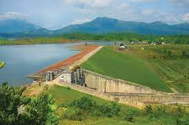

Banasura Sagar Dam
In the dam's reservoir there is a set of islands that were formed when the reservoir submerged the surrounding areas.

Meenmutty Falls
Meenmutty Falls is located 29 km from Kalpetta in Wayanad District in the state of Kerala, India.
Chembra Peak
The Chembra trek uphill begins modestly along tea plantations and in an hour it reaches up to the heart-shaped lake or hriyadayasarassu.